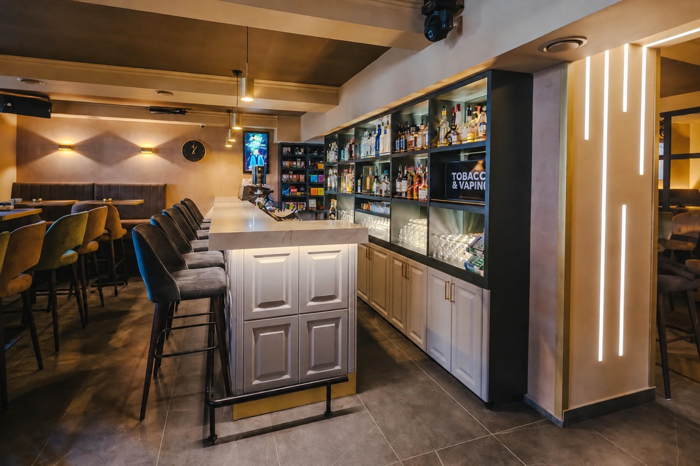
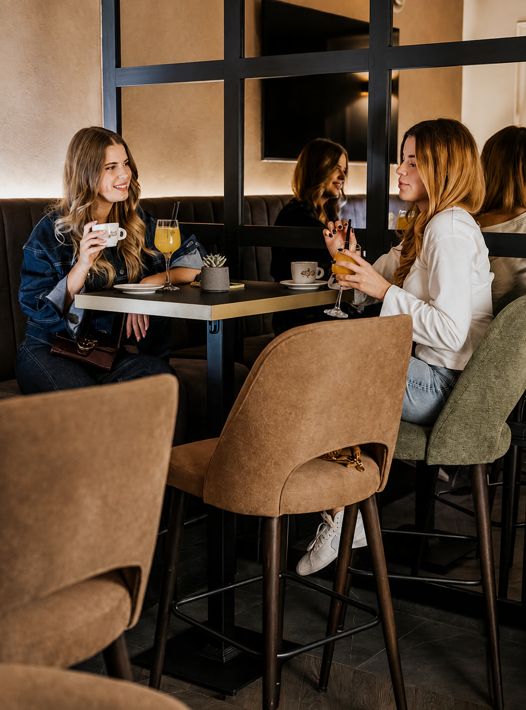
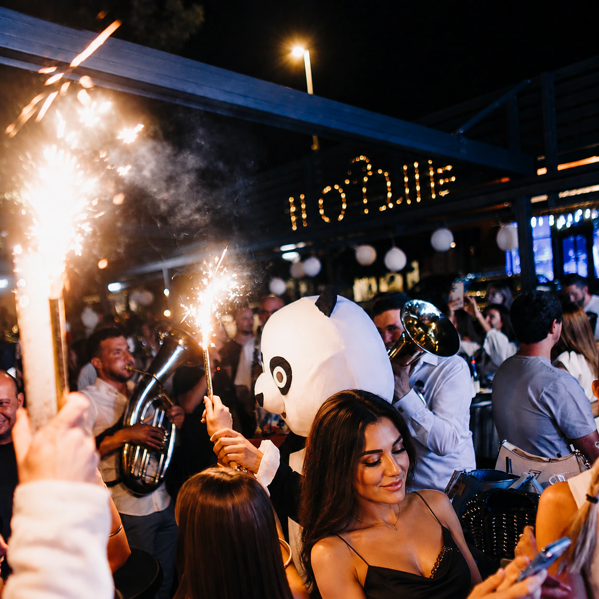
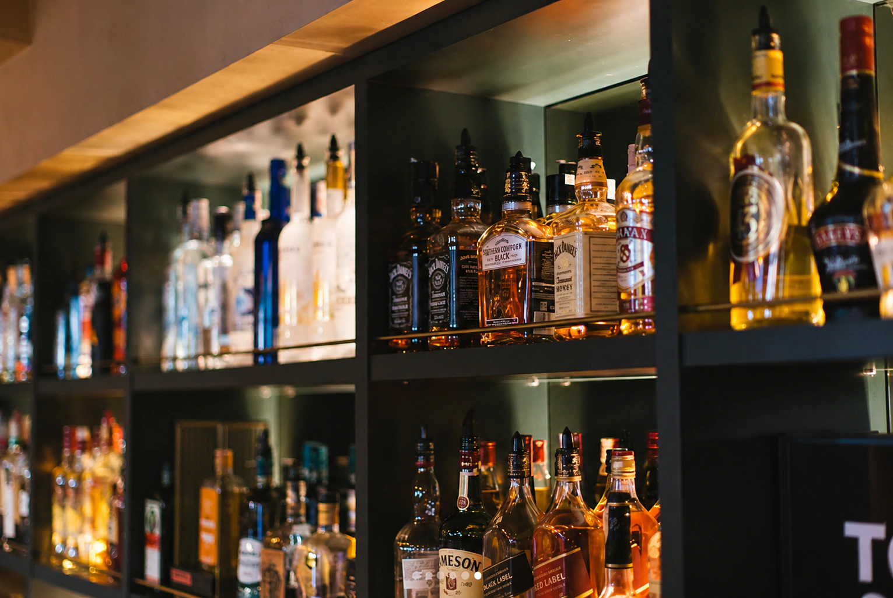

Antique Bar

Danju lounge.Vikendom druga energija.
01 — Antique
Mirniji ritam prije nego grad prijeđe u noć.
Suvremen interijer, toplo svjetlo i prostor za razgovor. Antique dan započinje opušteno, a vikendom pokazuje svoju življu stranu.
02 — Dva lica
Dan / Noć
Isti prostor mijenja tempo. Ranije — kava, razgovori i lounge atmosfera. Vikendom — glazba, piće i puna terasa.

Kava
Vikend03 — Atmosfera
Atmosfera, bez filtera.
Od prostora do trenutka. Odaberi fotografiju za puni prikaz.

04 — Za šankom
Piće u prvom planu.
Od dnevne kave do pića za vikend. Ponuda prati promjenu ritma kroz dan i večer.
06 — Pronađi nas
Đakovo
Jelačićeva ulica, Đakovo
Otvori lokaciju u kartama i pokreni navigaciju.
Pokreni navigaciju ↗